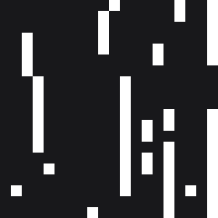
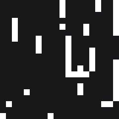
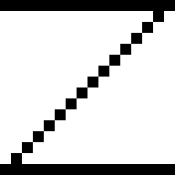
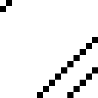

4-neighbor vs 8-neighbor context
von Neumann / rook
N
W x E
S
Moore / king
NW N NE
W x E
SW S SE
The experiment changes only which neighboring tiles influence the choice; the hard legal adjacency rules remain unchanged.
Matched seeds; Context-4 order N,E,S,W; Context-8 order N,NE,E,SE,S,SW,W,NW. Smaller fidelity differences are better. Infinite means output mass outside source support.
Result: Moore is not uniformly superior. It provides a small average letter-Z diagonal improvement, is strongest on Knot, is mixed on Cat, and is worse on Simple Knot. The seed-0 letter-Z output does not visibly preserve a complete Z under any condition.
stick
Frequency · ordinary-wfc
20/20 success · fallback 0.0%
Frequency · wfc-as-sat

20/20 success · fallback 0.0%
Context-4 · ordinary-wfc

20/20 success · fallback 0.4%
Context-4 · wfc-as-sat

20/20 success · fallback 0.4%
Context-8 · ordinary-wfc

20/20 success · fallback 3.9%
Context-8 · wfc-as-sat

20/20 success · fallback 3.9%
| Condition | Engine | Tile | Horizontal | Vertical | Diagonal SE | Diagonal SW | 8-neighbor | Fallback |
|---|---|---|---|---|---|---|---|---|
| Frequency | ordinary-wfc | 0.0011 | — | 0.2024 | — | 0.0048 | — | 0.0% |
| Context-4 | ordinary-wfc | 0.0041 | 0.0047 | 0.0058 | 0.0125 | 0.0027 | 0.0083 | 0.4% |
| Context-8 | ordinary-wfc | 0.0160 | 0.0155 | 0.0230 | 0.0052 | 0.0061 | 0.0093 | 3.9% |
| Frequency | wfc-as-sat | 0.0011 | — | 0.2024 | — | 0.0048 | — | 0.0% |
| Context-4 | wfc-as-sat | 0.0041 | 0.0047 | 0.0058 | 0.0125 | 0.0027 | 0.0083 | 0.4% |
| Context-8 | wfc-as-sat | 0.0160 | 0.0155 | 0.0230 | 0.0052 | 0.0061 | 0.0093 | 3.9% |
letter-z
Source

Frequency · ordinary-wfc

18/20 success · fallback 0.0%
Frequency · wfc-as-sat
20/20 success · fallback 0.0%
Context-4 · ordinary-wfc

18/20 success · fallback 0.0%
Context-4 · wfc-as-sat
20/20 success · fallback 0.0%
Context-8 · ordinary-wfc
18/20 success · fallback 0.0%
Context-8 · wfc-as-sat
20/20 success · fallback 0.0%
| Condition | Engine | Tile | Horizontal | Vertical | Diagonal SE | Diagonal SW | 8-neighbor | Fallback |
|---|---|---|---|---|---|---|---|---|
| Frequency | ordinary-wfc | 0.0776 | 0.1579 | 0.0810 | 0.0892 | 0.1475 | 0.1189 | 0.0% |
| Context-4 | ordinary-wfc | 0.0708 | 0.1526 | 0.0700 | 0.0764 | 0.1438 | 0.1107 | 0.0% |
| Context-8 | ordinary-wfc | 0.0716 | 0.1507 | 0.0700 | 0.0764 | 0.1432 | 0.1101 | 0.0% |
| Frequency | wfc-as-sat | 0.0842 | 0.1726 | 0.0989 | 0.1061 | 0.1537 | 0.1329 | 0.0% |
| Context-4 | wfc-as-sat | 0.0730 | 0.1621 | 0.0858 | 0.0917 | 0.1473 | 0.1218 | 0.0% |
| Context-8 | wfc-as-sat | 0.0771 | 0.1641 | 0.0823 | 0.0882 | 0.1496 | 0.1211 | 0.0% |
cat
Source
Frequency · ordinary-wfc
4/5 success · fallback 0.0%
Frequency · wfc-as-sat
5/5 success · fallback 0.0%
Context-4 · ordinary-wfc
4/5 success · fallback 3.8%
Context-4 · wfc-as-sat
5/5 success · fallback 15.6%
Context-8 · ordinary-wfc
3/5 success · fallback 5.9%
Context-8 · wfc-as-sat
5/5 success · fallback 28.2%
| Condition | Engine | Tile | Horizontal | Vertical | Diagonal SE | Diagonal SW | 8-neighbor | Fallback |
|---|---|---|---|---|---|---|---|---|
| Frequency | ordinary-wfc | 0.3263 | 0.4395 | 0.4330 | 0.4430 | 0.4797 | 0.4484 | 0.0% |
| Context-4 | ordinary-wfc | 0.1971 | 0.2589 | 0.3341 | 0.3231 | 0.3394 | 0.3132 | 3.8% |
| Context-8 | ordinary-wfc | 0.1730 | 0.2899 | 0.2850 | 0.2877 | 0.2831 | 0.2867 | 5.9% |
| Frequency | wfc-as-sat | 0.2764 | 0.3513 | 0.4081 | 0.4222 | 0.4037 | 0.3957 | 0.0% |
| Context-4 | wfc-as-sat | 0.1493 | 0.2499 | 0.2891 | 0.2711 | 0.3023 | 0.2779 | 15.6% |
| Context-8 | wfc-as-sat | 0.1752 | 0.2513 | 0.3170 | 0.2939 | 0.3450 | 0.3011 | 28.2% |
knot
Source
Frequency · ordinary-wfc
5/5 success · fallback 0.0%
Frequency · wfc-as-sat
5/5 success · fallback 0.0%
Context-4 · ordinary-wfc
5/5 success · fallback 2.2%
Context-4 · wfc-as-sat
5/5 success · fallback 0.0%
Context-8 · ordinary-wfc
5/5 success · fallback 4.0%
Context-8 · wfc-as-sat
5/5 success · fallback 11.3%
| Condition | Engine | Tile | Horizontal | Vertical | Diagonal SE | Diagonal SW | 8-neighbor | Fallback |
|---|---|---|---|---|---|---|---|---|
| Frequency | ordinary-wfc | 0.1148 | 0.2404 | 0.2312 | 0.3427 | 0.3261 | 0.2828 | 0.0% |
| Context-4 | ordinary-wfc | 0.1296 | 0.2488 | 0.2277 | 0.4079 | 0.3435 | 0.3036 | 2.2% |
| Context-8 | ordinary-wfc | 0.0956 | 0.1692 | 0.1973 | 0.2849 | 0.2689 | 0.2279 | 4.0% |
| Frequency | wfc-as-sat | 0.1208 | 0.2201 | 0.2046 | 0.3578 | 0.3363 | 0.2764 | 0.0% |
| Context-4 | wfc-as-sat | 0.1097 | 0.1923 | 0.1960 | 0.3138 | 0.2892 | 0.2452 | 0.0% |
| Context-8 | wfc-as-sat | 0.1011 | 0.1787 | 0.1879 | 0.2798 | 0.2584 | 0.2242 | 11.3% |
simple-knot
Source
Frequency · ordinary-wfc
3/5 success · fallback 0.0%
Frequency · wfc-as-sat
5/5 success · fallback 0.0%
Context-4 · ordinary-wfc

3/5 success · fallback 3.6%
Context-4 · wfc-as-sat
5/5 success · fallback 6.6%
Context-8 · ordinary-wfc

3/5 success · fallback 19.0%
Context-8 · wfc-as-sat
5/5 success · fallback 41.6%
| Condition | Engine | Tile | Horizontal | Vertical | Diagonal SE | Diagonal SW | 8-neighbor | Fallback |
|---|---|---|---|---|---|---|---|---|
| Frequency | ordinary-wfc | 0.0067 | 0.0276 | 0.0163 | 0.0540 | 0.0513 | 0.0365 | 0.0% |
| Context-4 | ordinary-wfc | 0.0023 | 0.0099 | 0.0046 | 0.0148 | 0.0101 | 0.0097 | 3.6% |
| Context-8 | ordinary-wfc | 0.0031 | 0.0129 | 0.0133 | 0.0369 | 0.0260 | 0.0218 | 19.0% |
| Frequency | wfc-as-sat | 0.0020 | 0.0469 | 0.0596 | 0.0438 | 0.0367 | 0.0471 | 0.0% |
| Context-4 | wfc-as-sat | 0.0032 | 0.0168 | 0.0286 | 0.0290 | 0.0391 | 0.0281 | 6.6% |
| Context-8 | wfc-as-sat | 0.0185 | 0.0479 | 0.1179 | 0.0822 | 0.0800 | 0.0821 | 41.6% |
Letter-Z diagonal lag detail
| Condition | Engine | r1 SE | r1 SW | r2 SE | r2 SW | r4 SE | r4 SW | r8 SE | r8 SW |
|---|---|---|---|---|---|---|---|---|---|
| Frequency | ordinary-wfc | 0.0892 | 0.1475 | 0.0975 | 0.1616 | 0.1146 | 0.1957 | 0.1223 | 0.3399 |
| Context-4 | ordinary-wfc | 0.0764 | 0.1438 | 0.0842 | 0.1560 | 0.0993 | 0.1880 | 0.1191 | 0.3253 |
| Context-8 | ordinary-wfc | 0.0764 | 0.1432 | 0.0844 | 0.1555 | 0.0998 | 0.1878 | 0.1192 | 0.3253 |
| Frequency | wfc-as-sat | 0.1061 | 0.1537 | 0.1125 | 0.1672 | 0.1257 | 0.1986 | 0.1291 | 0.3264 |
| Context-4 | wfc-as-sat | 0.0917 | 0.1473 | 0.0977 | 0.1592 | 0.1098 | 0.1891 | 0.1191 | 0.3103 |
| Context-8 | wfc-as-sat | 0.0882 | 0.1496 | 0.0933 | 0.1616 | 0.1099 | 0.1911 | 0.1160 | 0.3193 |
Interpretation
- Moore does not clearly improve the visible seed-0 Z; all displayed methods produce fragments rather than a complete letter.
- Across matched runs, Moore slightly improves letter-Z diagonal-pair and tagged local-8 scores versus Context-4.
- Letter-Z horizontal resemblance improves slightly; vertical is essentially tied for ordinary WFC and improves for SAT.
- Moore fallback is zero for letter-Z, but rises versus Context-4 on Stick, Cat, Knot, and especially Simple Knot.
- The effect is image-dependent: positive on Knot, mixed on Cat, negative on Simple Knot.
- Stick is conflict-free and ordinary WFC/SAT output hashes agree per matched condition and seed.
- In conflict cases, Moore sharply reduces letter-Z SAT conflicts but increases Simple Knot conflicts; CDCL interaction is also image-dependent.
Scope and limitations
Stick and letter-z use 20 matched seeds. Cat, knot, and simple-knot use five matched seeds. Failed runs remain in success and search statistics. Fidelity means are over successful finite measurements only; the table and raw JSON record infinity counts and per-seed values. These are modest samples, visible structure is not fully captured by pair statistics, output and source sizes can differ, and no significance tests were performed. Repository: moore-context-experiment.